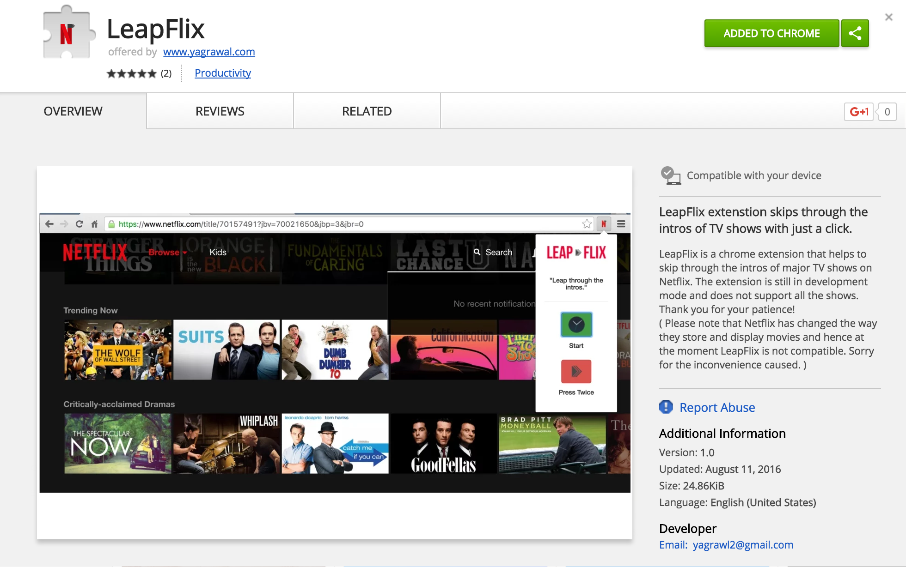
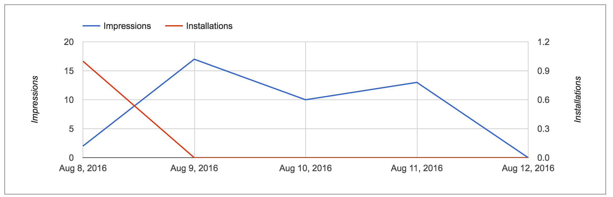
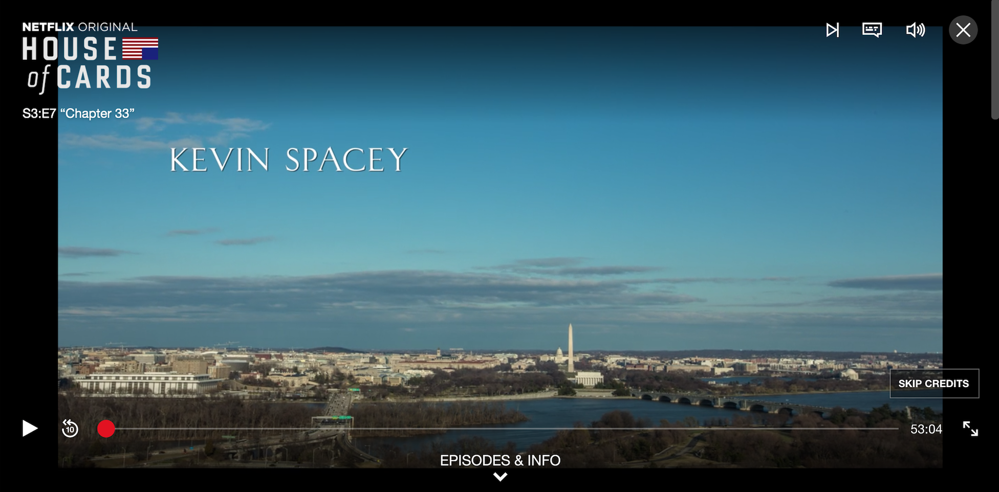

LeapFlix was designed to be a Chrome Extension which would skip through intros of popular TV shows on Netflix. Some shows have cold openning and terribly long intros. House of cards has a 90 second video of timelapses from Washington which gets a little boring to watch while binging, so I thought this was required.
Before starting anything, I went straight to Affinity Designer and made myself a logo. Design is my first preference. People do judge a book by it's cover so whatever the app does or does not do, it has got to look good. Then I started working on the tutorial and did the basic steps of making popup.html and popup.js. I worked on the basic design which wasn't anything too special - just the logo and a button.
Now I tried testing it out on House of Cards because that's one of my favorite shows. After the click of the button, the extension would get the URL of the active tab and then append '&t=96' at the end and finally reload it.
document.getElementById('getUrl') The first episode I played did not have a cold opening and so my extension worked perfectly. I skipped through the intro and reloaded exactly when the episode starts. The extension was working! Awesome! Well, not so much. When I tried testing it out on the very next episode, I waited till the intro began (This episode had a cold opening) so when it did I launched the extension and waited for it to reload. It just took me to 1 minute 36 seconds down the episode instead of skipping the intro. The time parameter obviously loads from t = 0.
I obviously needed to somehow monitor the time from the beginning to when the intro starts so the first thing that came to my mind is adding a clock button which should be started as soon as the episode does. That also required looking up stuff online but it worked out quickly.
The second step was fairly obvious and so I could just append the time of the clock added with the intro time to properly skip the intro. I tested it again and it worked out just fine. Aweosme! Now I went on to my favorite shows and checked their intro time. I checked the TrackId in the URL and updated the code accordingly to add time depending on the show.
I added about 10 different shows and then went on to test them. It worked perfectly every time and I thought I had a useful program right there. I closed the tabs and went on to upload everything to the Chrome Webstore. This was going to be my first ever extension so I paid the $5 fee, uploaded the app and waited for 60 minutes to get it published.
I download my extension from the Web Store, logged back into Netflix and checked it out. Failed! It skipped to some random time. I figured out that it was running the case when no known show was detected. I was playing House of Cards and it should have worked.
After some research I found out how Netflix actually works. The sources I used are not too reliable because Netflix doesn't release any of this information officially. Since Netflix has such a huge library, it is phsyically impossible for an individual to go through every thing so instead of loading the entire library and requiring large amounts of memory and processing time, Netflix uses something called a Sparse Matrix
So a sparse matrix as shown in the right is a matrix that contains a majority of zeros. So let's just say that each video title in the Netflix library is a number other than 0. Instead of carrying the entire matrix information, Sparse matrix just carries the information of the location where a number is non-zero thus saving considerable amount of prosessing effort. Also, these positions keep on changing each session so the trackID is nothing more than the position of the Title in a particular session for that particular user. Basically, my entire procedure of finding the show based on URL was flawed and hence the extension failed to serve it's purpose. This was an entire weekend worth of work that resulted into nothing, but it did teach me a lot. It taught how to make a basic chrome extension and get an insight on how Netlflix might be working.
I updated the Chrome Web Store info of the extension to 'outdated' and I apologize to the 15 something people that installed it on the first day before the update.
UPDATE
Checkout the bottom right corner. Netflix has finally introduced a 'skip credits' button making LeapFlix obsolete. It still was a good experience and I learnt a lot about working with Chrome Extensions in the process. I look forward to working with a new chrome extension idea in the future.
Go back to the TOP.